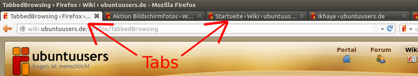

TabbedBrowsing
Achtung!
Da von Firefox alle sechs Wochen eine neue Version erscheint, kann dieser Artikel leider nicht – wie sonst in diesem Wiki üblich – mit einer bestimmten Ubuntu-Version getestet werden. Die Mozilla-Entwickler behalten sich vor, jederzeit neue Funktionen hinzuzufügen oder vorhandene wieder aus dem Programm zu entfernen. Unter solchen Umständen ist es nicht möglich, die Korrektheit der in diesem Artikel beschriebenen Informationen dauerhaft für eine Ubuntu-Version zu garantieren.
Als Tabbed Browsing bezeichnet man die Nutzung eines Webbrowsers mit Hilfe von Tabs. Hierbei handelt es sich um "Registerkarten", die es ermöglichen, in einem einzigen Fenster verschiedene Internetseiten anzuzeigen und zwischen diesen flexibel zu wechseln.
Arbeiten mit Tabs¶
Grundsätzlich: Die einfachste Möglichkeit zum Öffnen eines neuen Tabs ist das Klicken eines Links mit dem mittleren Mausbutton bzw. Mausrad. Die einfachste Möglichkeit zum Schließen eines Tabs ist ein Mittelklick auf den Tab.
Das Öffnen eines Tabs im Hintergrund bedeutet, dass die aktuelle Seite noch weiter angezeigt wird, bis zum neuen Tab gewechselt wird (z.B. mit linken Mausbutton auf diesen Tab). Dies ist die Standardeinstellung in Firefox. Sie bietet zum Beispiel den Vorteil, dass man noch die aktuelle Seite weiter lesen kann, während sich im Hintergrund eine neue Seite aufbaut, oder dass man von einer Suchergebnisseite gleich mehrere Suchergebnisse öffnen kann, ohne die Suchergebnisleiste zu verlassen. 
Das Öffnen eines Tabs im Vordergrund bedeutet umgekehrt, dass der neue Tab sofort angezeigt wird. Dies ist die Standardeinstellung für neue Tabs aus den Lesezeichen oder aus der Chronik (auch dort ist Mittelklick erlaubt).
Steuerung der Tabs¶
Neuen Tab öffnen: Strg + T , Doppelklick auf die Tableiste oder Rechtsklick -> "Neuer Tab"
Tab schließen: Strg + W , Mittelklick auf den Tab oder Rechtsklick -> "Tab schließen"
Zwischen den Tabs wechseln: Strg + Tab ⇆ von links nach rechts und Strg + ⇧ + Tab ⇆ von rechts nach links.
Springen zu Tab 1,2,3,..: Alt + 1 usw.
Tab duplizieren: Strg +
 halten und an beliebige Position verschieben
halten und an beliebige Position verschieben
Tabmix Plus¶
Tabmix Plus ist eine Erweiterung, die eine Vielzahl zusätzlicher Einstellungsmöglichkeiten für das Tabbed-Browsing vereint.
Diese umfassen unter anderem die Kontrolle über das Offnungsverhalten der Tabs. Das bedeutet, es lässt sich z.B. festlegen, dass Lesezeichen und URLs aus der Adressleiste in neuen Tabs, im Vordergrund oder im Hintergrund geöffnet werden sollen. Desweiteren lassen sich das Klickverhalten auf Tab und Tableiste verändern, sowie das Kontextmenü mit nützlichen neuen Funktionen ergänzen, wie z.B. das Schließen oder Neuladen aller Tabs. Zusätzlich gibt es noch die Möglichkeit Tabs wiederherzustellen, falls einer aus Versehen geschlossen worden sein sollte, und das Einfrieren von Tabs, um Überschreiben und Schließen zu verhindern. Und vieles Mehr!
Neu hinzugekommen in Version 0.3 ist ein umfassender Sitzungs-Manager, mit der Möglichkeit zum Speichern und Wiederherstellen von Browsersitzungen, sowie auch das automatische Wiederherstellen nach einem Absturz.
Wem diese Einstellungsvielfalt einfach zu viel ist, kann auch mal einen Blick auf die Erweiterungen Tabbrowser Perferences, Click2Tab, TabX und Session Saver werfen.

 Übersichtsartikel
Übersichtsartikel- Erstellt mit Inyoka
-
 2004 – 2017 ubuntuusers.de • Einige Rechte vorbehalten
2004 – 2017 ubuntuusers.de • Einige Rechte vorbehalten
Lizenz • Kontakt • Datenschutz • Impressum • Serverstatus -
Serverhousing gespendet von